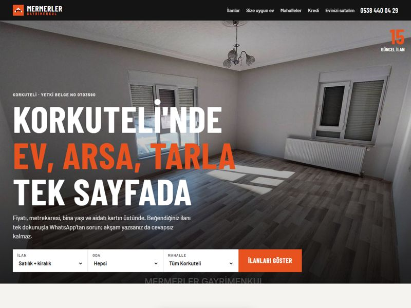
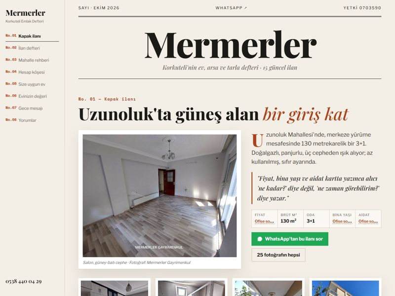
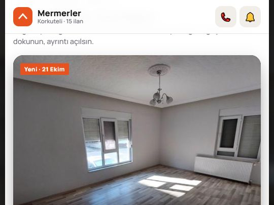

Tüm ilanlarınız tek sayfada, akşam gelen mesaja anında ilk cevap
Merhabalar Arif Bey, Facebook'taki Uzunoluk 3+1 ilanınızın altında söz verdiğimiz ücretsiz örnek hazır. sahibinden mağazanızdaki 14 ilanın tamamını ve Facebook'taki yeni 3+1'i, kendi fotoğraflarınızla tek sayfada topladık; her ilanda sahibinden bağlantısı da var (son güncelleme 22 Ekim). Aşağıda aynı içeriği üç farklı yerleşimde göreceksiniz; hepsi tıklanıp denenebilir.
3 tasarım: aynı ilanlar, üç ayrı yerleşim

Tam ekran fotoğraf, ilan ızgarası
Turuncu-siyah ofis renkleriniz; filtre üstte sabit, kartta fiyat · m² · oda · bina yaşı · aidat.
Vitrin yerleşimi: tam ekran fotoğrafTasarımı aç →
Emlak defteri, numaralı bölümler
Kapak ilanı çerçeveli fotoğraflarla; ilanlar defter satırı gibi, mahalle rehberi yazılı.
Dergi yerleşimi: çerçeveli fotoğraf, numaralı bölümlerTasarımı aç →
Kaydır, beğen, gezi rotası
Telefonda uygulama gibi: mahalle halkaları, sağa kaydır = favori, alt menü.
Uygulama yerleşimi: kartlar, alt menüTasarımı aç →İstediğiniz iki şey çalışıyor
- Tüm ilanlar tek sayfadaKendi fotoğraflarınızla. Fiyat, m², oda, bina yaşı, aidat kartın üstünde; boş olanlar "Ofise sorun" diye işaretli, panelden doldurunca görünür. Oda, fiyat, mahalle filtresi ve arama var.
- Akşam gelen mesaja otomatik ilk cevapSağ alttaki yeşil düğmeyle deneyin: saat 21:40'ı seçin, "Uzunoluk 3+1 fiyatı ne?" yazın. Asistan ilanı bulur, kredi taksitini söyler, görme günü sorar, adını alır; sabah size tek satırlık özet düşer.
- "WhatsApp'tan bu ilanı sor" düğmesiHer kartta; mesaj ilan numarasıyla hazır gelir, "hangi ilan?" sorusu biter.
Size özel ekstralar (ücretsiz)
- Korkuteli mahalle haritasıHangi mahallede kaç ilan var; sayıya dokununca o mahallenin ilanları açılıyor.
- Kredi hesaplayıcı + "Kira mı, kredi mi?"Kendi kiralık ve satılık ilan fiyatlarınızla çalışıyor; alıcı "bu evin taksiti ne?" sorusunu kendisi cevaplıyor.
- Evinizi satalım (ön değerleme)Ev sahibi mahalle, m², bina yaşı seçiyor; sizin ilan fiyatlarınızdan ön tahmin görüyor ve yerinde değerleme için WhatsApp'tan yazıyor. Ofise yeni portföy getirir.
- Fiyat alarmı"Fiyatı düşünce haber ver" ile müşterinin numarası size kalıyor. Uzunoluk 2+1'de 300.000 TL'lik indirim kartta "Fiyatı düştü" diye görünüyor.
- Google profil + yorum bağlantısıPuanınız (5,0) ve yorum bağlantısı sayfada; bağlantı her müşteriye aynı şekilde gider.
- 360° sokak görünümüMüşteri ofise gelmeden sokağı görüyor.
Korkuteli'nde ilk olacak 4 özellik
Bütçe, kişi sayısı, öncelik seçilir; ilanlar puanlanır ve neden uyduğu yazılır. Uyan yoksa talep size düşer.
Müşteri beğendiği evleri seçer; sistem mahalleye göre sıralar, "Cumartesi 11:00'de bu 3 evi görelim" mesajı tek dokunuşla size gelir.
Uygulama tasarımında kartı sağa kaydıran favoriye ekler; favoriler yan yana karşılaştırılır.
Ofis için: ilan bilgisini bir kez girin; Facebook grubu, sahibinden başlığı, Instagram, WhatsApp durum ve Google gönderisi metni hazır. Fiyat/aidat boşsa uyarır.
Herkese açık hesaplarınızda gördüklerimiz
Google profiliniz Uzunoluk 1430. Sokak'ı, Facebook sayfanız Kiremitli 816. Sokak'ı gösteriyor; Google fotoğraflarında hâlâ eski "Erva Emlak" tabelası var. Müşteri haritada yanlış yere gidebilir.
Uzunoluk 3+1'de fiyat yok; 8 konut ilanının hiçbirinde aidat yazmıyor, çoğunda bina yaşı da yok. Her eksik bilgi bir "ne kadar?" mesajı demek.
"Diğer ilanlarımız" denince müşteri sahibinden'e gidiyor; orada yanınızda başka ofislerin ilanları da çıkıyor.
Puanınız 5,0 ama 7 yorumla kalmış. Satış sonrası "hayırlı olsun" paylaşımlarınız Facebook'ta var; Google'a taşınmıyor.
Teklif
Emlak sitesi + WhatsApp asistanı (3 tasarımdan seçtiğiniz)
KDV dahil değildir.
Kurulum: site, alan adı ve 1 yıl barındırma, mevcut 15 ilanın girişi, ilan paneli, Google profilinizdeki adres ve fotoğraf düzeltmesi. Aylık: WhatsApp asistanı, yeni ilanların siteye eklenmesi, bakım. Onaydan sonra 7 günde yayında.
Ayrıntılı teklif ve iş takvimi →